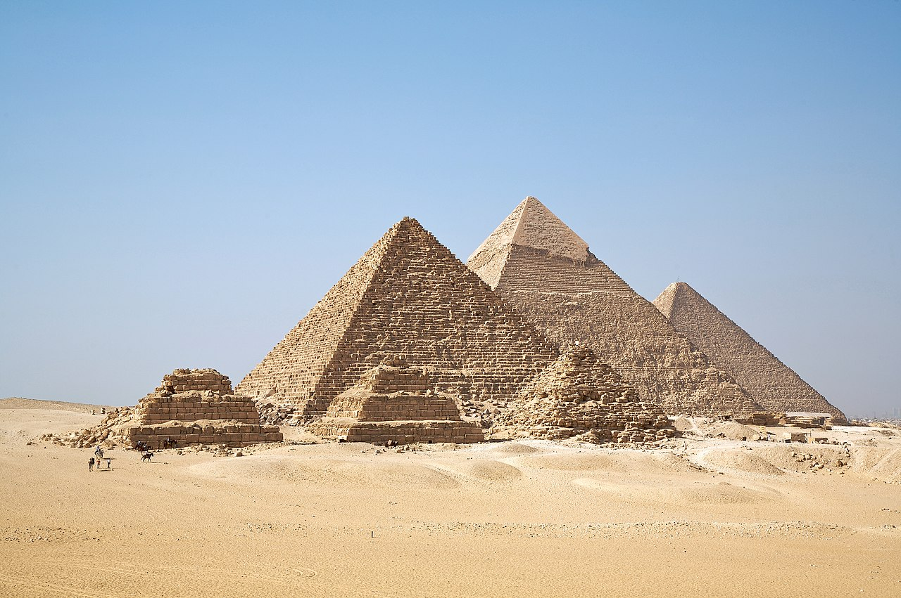

A view of the Giza pyramid complex from the plateau to the south of the complex. From left to right, the three largest are: the Pyramid of Menkaure, the Pyramid of Khafre and the Great Pyramid of Giza. The three smaller pyramids in the foreground are subsidiary structures associated with Menkaure's pyramid.
Khan el-Khalili (Arabic: خان الخليلي) is a famous bazaar and souq (or souk) in the historic center of Cairo, Egypt. Established as a center of trade in the Mamluk era and named for one of its several historic caravanserais, the bazaar district has since become one of Cairo's main attractions for tourists and Egyptians alike. It is also home to many Egyptian artisans and workshops involved in the production of traditional crafts and souvenirs. The name Khan el-Khalili historically referred to a single building in the area; today it refers to the entire shopping district.